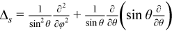

Poisson Solver routines enable approximate solving of certain two-dimensional and three-dimensional problems. Figure "Structure of the Poisson Solver" shows the general structure of the Poisson Solver.
Note
Although in the Cartesian case, both periodic and non-periodic solvers are also supported, they use the same interfaces.
Sections below provide details of the problems that can be solved using Intel® oneAPI Math Kernel Library Poisson Solver.
Two-Dimensional Problems
Notational Conventions
The Poisson Solver interface description uses the following notation for boundaries of a rectangular domain ax < x < bx, ay < y < by on a Cartesian plane:
bd_ax = {x = ax, ay ≤ y ≤ by}, bd_bx = {x = bx, ay ≤ y ≤ by}
bd_ay = {ax ≤ x ≤ bx, y = ay}, bd_by = {ax ≤ x ≤ bx, y = by}.
The following figure shows these boundaries:
The wildcard "+" may stand for any of the symbols ax, bx, ay, by, so bd_+ denotes any of the above boundaries.
The Poisson Solver interface description uses the following notation for boundaries of a rectangular domain aφ < φ < bφ, aθ < θ < bθ on a sphere 0 ≤ φ ≤ 2 π, 0 ≤ θ ≤ π:
bd_aφ = {φ = aφ, aθ ≤ θ ≤ bθ}, bd_bφ = {φ = bφ, aθ ≤ θ ≤ bθ},
bd_aθ = {aφ ≤ φ ≤ bφ, θ = aθ}, bd_bθ = {aφ ≤ φ ≤ bφ, θ = bθ}.
The wildcard "~" may stand for any of the symbols aφ, bφ, aθ, bθ, so bd_~ denotes any of the above boundaries.
Two-dimensional Helmholtz problem on a Cartesian plane
The two-dimensional (2D) Helmholtz problem is to find an approximate solution of the Helmholtz equation
in a rectangle, that is, a rectangular domain ax< x < bx, ay< y < by, with one of the following boundary conditions on each boundary bd_+:
The Dirichlet boundary condition
The Neumann boundary condition
where
n= -x on bd_ax, n= x on bd_bx,
n= -y on bd_ay, n= y on bd_by.
Periodic boundary conditions
Two-dimensional Poisson problem on a Cartesian plane
The Poisson problem is a special case of the Helmholtz problem, when q=0. The 2D Poisson problem is to find an approximate solution of the Poisson equation
in a rectangle ax< x < bx, ay< y < by with the Dirichlet, Neumann, or periodic boundary conditions on each boundary bd_+. In case of a problem with the Neumann boundary condition on the entire boundary, you can find the solution of the problem only up to a constant. In this case, the Poisson Solver will compute the solution that provides the minimal Euclidean norm of a residual.
Two-dimensional (2D) Laplace problem on a Cartesian plane
The Laplace problem is a special case of the Helmholtz problem, when q=0 and f(x, y)=0. The 2D Laplace problem is to find an approximate solution of the Laplace equation

in a rectangle ax< x < bx, ay< y < by with the Dirichlet, Neumann, or periodic boundary conditions on each boundary bd_+.
Helmholtz problem on a sphere
The Helmholtz problem on a sphere is to find an approximate solution of the Helmholtz equation

in a domain bounded by angles aφ≤ φ ≤ bφ, aθ≤ θ ≤ bθ (spherical rectangle), with boundary conditions for particular domains listed in Table "Details of Helmholtz Problem on a Sphere".
| Domain on a sphere | Boundary condition | Periodic/non-periodic case |
|---|---|---|
Rectangular, that is, bφ - aφ < 2 π and bθ - aθ < π |
Homogeneous Dirichlet boundary conditions on each boundary bd_~ |
non-periodic |
Where aφ = 0, bφ = 2 π, and bθ - aθ < π |
Homogeneous Dirichlet boundary conditions on the boundaries bd_aθ and bd_bθ |
periodic |
Entire sphere, that is, aφ = 0, bφ = 2 π, aθ = 0, and bθ = π |
Boundary condition at the poles |
periodic |
Poisson problem on a sphere
The Poisson problem is a special case of the Helmholtz problem, when q=0. The Poisson problem on a sphere is to find an approximate solution of the Poisson equation
in a spherical rectangle aφ≤ φ ≤ bφ, aθ≤ θ ≤ bθ in cases listed in Table "Details of Helmholtz Problem on a Sphere". The solution to the Poisson problem on the entire sphere can be found up to a constant only. In this case, Poisson Solver will compute the solution that provides the minimal Euclidean norm of a residual.
Approximation of 2D problems
To find an approximate solution for any of the 2D problems, in the rectangular domain a uniform mesh can be defined for the Cartesian case as:

and for the spherical case as:
The Poisson Solver uses the standard five-point finite difference approximation on this mesh to compute the approximation to the solution:
In the Cartesian case, the values of the approximate solution will be computed in the mesh points (xi , yj) provided that you can supply the values of the right-hand side f(x, y) in these points and the values of the appropriate boundary functions G(x, y) and/or g(x,y) in the mesh points laying on the boundary of the rectangular domain.
In the spherical case, the values of the approximate solution will be computed in the mesh points (φi , θj) provided that you can supply the values of the right-hand side f(φ, θ) in these points.
Note
The number of mesh intervals nφ in the φ direction of a spherical mesh must be even in the periodic case. The Poisson Solver does not support spherical meshes that do not meet this condition.
Three-Dimensional Problems
Notational Conventions
The Poisson Solver interface description uses the following notation for boundaries of a parallelepiped domain ax < x < bx, ay < y <by, az < z <bz:
bd_ax = {x = ax, ay ≤ y ≤ by, az ≤ z ≤ bz}, bd_bx = {x = bx, ay ≤ y ≤ by, az ≤ z ≤ bz},
bd_ay = {ax ≤ x ≤ bx, y = ay, az ≤ z ≤ bz}, bd_by = {ax ≤ x ≤ bx, y = by, az ≤ z ≤ bz},
bd_az = {ax ≤ x ≤ bx, ay ≤ y ≤ by, z = az}, bd_bx = {ax ≤ x ≤ bx, ay ≤ y ≤ by, z = bz}.
The following figure shows these boundaries:
The wildcard "+" may stand for any of the symbols ax, bx, ay, by, az, bz, so bd_+ denotes any of the above boundaries.
Three-dimensional (3D) Helmholtz problem
The 3D Helmholtz problem is to find an approximate solution of the Helmholtz equation
in a parallelepiped, that is, a parallelepiped domain ax< x < bx, ay< y < by, az< z < bz, with one of the following boundary conditions on each boundary bd_+:
The Dirichlet boundary condition
The Neumann boundary condition
where
n= -x on bd_ax, n= x on bd_bx,
n= -y on bd_ay, n= y on bd_by,
n= -z on bd_az, n= z on bd_bz.
Periodic boundary conditions
Three-dimensional (3D) Poisson problem
The Poisson problem is a special case of the Helmholtz problem, when q=0. The 3D Poisson problem is to find an approximate solution of the Poisson equation
in a parallelepiped ax< x < bx , ay< y < by, az< z < bz with the Dirichlet, Neumann, or periodic boundary conditions on each boundary bd_+.
Three-dimensional (3D) Laplace problem
The Laplace problem is a special case of the Helmholtz problem, when q=0 and f(x, y, z)=0. The 3D Laplace problem is to find an approximate solution of the Laplace equation
in a parallelepiped ax< x < bx , ay< y < by, az< z < bz with the Dirichlet, Neumann, or periodic boundary conditions on each boundary bd_+.
Approximation of 3D problems
To find an approximate solution for each of the 3D problems, a uniform mesh can be defined in the parallelepiped domain as:
where
The Poisson Solver uses the standard seven-point finite difference approximation on this mesh to compute the approximation to the solution. The values of the approximate solution will be computed in the mesh points (xi, yj, zk), provided that you can supply the values of the right-hand side f(x, y, z) in these points and the values of the appropriate boundary functions G(x, y, z) and/or g(x, y, z) in the mesh points laying on the boundary of the parallelepiped domain.